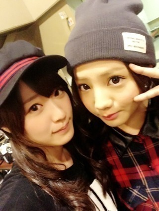
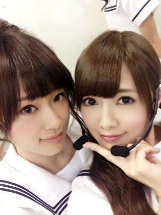

2013/0929Sun（´-`）.｡oO(か ずみん×224
バケラッタ(*´ω`*)ﾉ
いつも応援ありがとう！
今日は名古屋での個別握手会
でした〜ヽ(´>∀<`*)ﾉ
すっっっごく沢山の方が
来て下さいまして...
感動しました(T_T)(T_T)♡
みなさん、本当いい人♡
楽しかったです。
ありがとうございましたっ♪
時間がなさすきて
全身コーデ撮れんかった(T_T)
今日は帽子がポイントでしたσ('д'o)
じょーずの写メで許してちょ♪笑

てへ♪
この写真口似てない！？！？
2人ともキュッてしてる！
帰宅時にとまととろっちーと♪
--------------
昨日はガールズアワードに
出演させていただきました！
私はいつもよりちょっと濃いめの
メイクに久しぶりのお団子ヘア！！
まいやんと！
まいやんと写メ撮る時は
お団子ヘアの時が多い気がする♪笑
なぜだろ！？

私は初めてランウェイを
歩かせていただきました( ∩ˇωˇ∩
女の子の永遠の憧れである
ランウェイをお洋服に身を包まれて
一人で歩くというのは
すごく素敵な経験でした♭.°
想像以上に難しく、
緊張もしましたが、
もっと勉強して、
また機会があれば経験させて
もらいたいです(*^^*)
ありがとうございました！
----------
今日もみなさんからの
質問に答えます( ´ ▽ ` )ﾉ
★かずみんは剣道部に入って
自分自身変わった事ありますか？？
→物心着いた時から剣道を
始めてたので変化は"？"だけど
確実に言えるのは、剣道をもし
やっていなかったら弱い人間に
なっていたと思います。
武道はやはり日常の振る舞いから
上下関係まで厳しく指導される
ので、沢山学べました！
.
.
.
★自分は普段のかずみさんも好きですが
ステージ上でのかずみさんのアイドル
としてのダンス歌が大好きです！
かずみさんがアイドルとして
ステージ上でのかずみさんのアイドル
としてのダンス歌が大好きです！
かずみさんがアイドルとして
ステージ上とか普段とか大事に
していることはなんですか？
→ありがとう(T_T)
普段は本当に毎日楽しく
生きてます。笑
もちろん忙しい時もあるし
ルールとかはちゃんと
守らなきゃいけないけど
全然苦じゃないし^ ^
基本自由にメンバーや
友達と楽しく過ごしてるよ！
ステージの上ではTHE アイドルに
なるように日々研究しています！
.
.
.
★握手会で大好きなセーラームーン
のコスプレはしないの？
のコスプレはしないの？
→したいのは山々ですが
メンバーから笑われそうなので
する勇気はありません(￣▽￣)
.
.
.
★
かずみんは剣道の有段者だけど
時代劇のオファーが来たらやってみたいと思う？
または殺陣に興味ある？
→実は乃木坂に入る前、
時代劇に出たくて殺陣を本気で
習おうとしてました！
今は他にやるべきことが
沢山あるので、機会があれば
いつか...というカンジです！！
.
.
.
★
好きなセーラー戦士
トップ３を教えてください
→マーキュリー♡
セーラームーン♡
ビーナス♡
.
.
.
★
俺は飴と鞭コンビ大好きですが、
かずみんはレッスンの合間とかに
陽菜ちゃんと剣道ごっこを
したことありますか？
→私は剣道しか取り柄がないくらい
ずっと剣道中心の生活でしたが、
陽菜ちゃんは剣道をちょっとしか
やってなかったみたいで。笑
いくらずっと一緒にいる
陽菜ちゃんでも剣道の話は
あんまりしないですね´д`
.
.
.
★
一人でいるのが好きな人は
どう思いますか？!!
→好きです。いいと思います！
一人で図書室で本を読む時間が
私は好きでした(T_T)
高校時代が懐かしい。
.
.
.
★
今年高校受験なんですが、
かずみんは高校受験どうやって
乗り切りましたか？
→やっぱりわかりやすい先生の
個別塾に行ってましたね！
私は志望高には受かったけれど
受験に失敗してるので...
(点数が過去最低だった)
そんな私からの失敗しないための
アドバイスは、
過去問を解いて
安心しないことかな。
私みたいにならないようにね！
頑張って下さい！！
.
.
.
今日はこの辺で(*´ω`*)
一つ一つ真剣に答えました。
長くてゴメンね(´;ω;`)
それでは、
明日からも頑張ります！
おやすみなさい...☆
.
.
.
.
.
あ、アメブロの当番今日私だ！
そっちも今から書かなきゃ！！
2013/09/29 22:00


コメント(514)
またかずみんに会いにいくわなぁ～!!
スースーはやめてなwww
かずみん！！
名古屋の握手会楽しかったぞぉ(^_^)
服可愛かった（≧∇≦）
たくちゃん
こんばんは♪
握手会楽しめたようで良かったです♪
帽子姿もメッチャクチャかわいいっす(照)
ガールズアワードお疲れ様でした♪
アメブロも楽しみにしてまーす！
では、バイバイです(^_^)/~~
かずみん握手会おつかれさま♪(ｏ・ω・)ノ))
ばけらった！
かずみん可愛い！
毎日を大切に頑張ってください。
行きたかった…(；-；)
口元似てるかも！
お団子ヘアかわいいよ♪
ゆーーち。
個握、ガールズアワード
お疲れさまです
来週は代々木～♪
楽しみd=(^o^)=b
それでわ、おやすみなさい
ランウェイ歩いてる姿可愛かったよ
おつかれ！
じょーさんとの写メかわいい！
bay
アメイジング＼(^o^)／
バケラッタ！:;((•﹏•๑)));:
お疲れ様ですー(๑>ڡ<๑)
今日握手会第一部に行きました!!
はじめてかずみんと話せて、ドキドキやばかったけど、優しくていねいに握手してくれて嬉しかったよー(*´▽｀*)
ますますファンになりました(*^^*)
また必ず行きまーす!!
かずみんお仕事顔晴れー(^^)/☆
握手会お疲れさま( ^ω^ )
帽子似合ってるよ(^o^)/
ボーイッシュかと思いきやめっちゃ可愛いとゆー\(//∇//)\
それに俺が好きなかずみんの唇も安定です（笑）
じょーさんと似てるけど、やっぱかずみんの唇が良いっ！笑
なんか凄いセクシーなんだよね（≧∇≦）
一回真っ赤なグロスとか塗ってみてよ（笑）
また後でコメントするね^_−☆
更新ありがとう！アメーバのほうも待ってるね＊
個別握手会お疲れ様ー
帽子似合ってるよ♪
あと、ガールズアワードもお疲れ様！
行けなかったけど画像は見れた！笑
可愛かった♪お団子似合ってたし♪♪
来週？いや、今週は代々木ライブだね！
良い思い出にしてね！
ポジティブSAY!
やっほ！
握手会お疲れ様(^^)
あんまり枚数無くて残念だったけど久々に会えてよかったよ☆
ひかるんとも連番できたし(o^^o)
では、またね！
なす
帽子めっちゃ可愛かったよ☆
名古屋個別お疲れ様(¨)ノ
かずみんキャップ可愛いー∩ω∩♪♪
全身コーデ見たかったなー(T_T)
ガルアワもUstreamの配信で見たよ！
かずみん可愛いかったよ♪
しかもコーデも髪型もドストライクすぎた…
あ、そうそう！
aikoのライブ行ってきたよ＼(^o^)／
Zepp Tokyoだったんだけどすごく懐かしかったw
それじゃまたね♪
アメブロ更新待ってるよぉ〜
じゅんこです！
握手会お疲れさま。
今日もたくさん来てくれたみたいで良かった！
ウチも行きたかったー(泣)
かずみん、これからも大変だと思うけど頑張ってね！
ずっと応援してるから。
埼玉から名古屋はさすがに移動だけでも大変だったよ(^^;)
来週の代々木（昼）ライブ、
再来週の幕張握手会もよろしく(゜∇^d)!!
更新ありがと＼(^o^)／
名古屋楽しかったよぉー( ´ ▽ ` )ﾉ
約束のホワイトハイありがと♪(´ε｀ )笑
今名古屋から東京に車移動だから
またあとでコメントするね( ´ ▽ ` )ﾉ
んぢゃぁまず( ´ ▽ ` )ﾉ
水色時計のまっきぃでした＼(^o^)／
キャラクターよろしく(；´Д`A笑
じょーさんと口似てる(≧▽≦)(笑)
かずみん可愛いーね(*´▽｀*)生で見たかったなー(>_<)
来週は代々木ライブだね(ﾉ^^)ﾉ今日チケット引き換えてきたよーo(^o^)o
16列目やったわ(･∀･)楽しみー(≧∇≦*)
アメブロもみるねー♪
個握お疲れ様♪
相変わらずかずみん可愛くてやばだった。
最初の１枚目かずみん泣いてたのに、気のきいたこん言わんで、相変わらず可愛Eねとか言ってごめんけね(>_<)
代々木ライブめっちゃ楽しみにしてるけん、リハ頑張ってね♪
バケラッタ！
握手会お疲れさま！月に変わってー！(笑)
お団子かずみんかわゆす(*^^*)
代々木まで一週間！リハ頑張ってね！
それじゃまぁたぁなぁー(^o^)
キャップの被り方が活かしてたよ*\(^o^)/*笑
かずみんから
先週ぶり！と言ってくれた時はテンション上がりまくった（笑）
耳がかわいいねと言われた、たっくん(^.^)より（笑）
かずみん、今日は何だか元気がなかったように思ったのはおいらの気のせいかな？
3部・4部と逢えたのはすごく嬉しかったよ
一週間後は代々木
体調管理に気をつけてね
かずみん バケラッタ ＼(^o^)／
握手会おつかれさまー
じょーずー 2人とも口元きゅっとしてるね！
かずみん の帽子オシャレだね ♪( ´▽｀)
帽子の似合う女の子ってドキッとしちゃう！（≧∇≦）
ガールズアワードでのランウェイデビューおめでとう *\(^o^)/*
ナタリーの記事で見たけど、秋らしい落ち着いた感じの衣装だったね ♫
これからファッションのお仕事も増えていくといいね！
今回も質問返しありがとう ( ´ ▽ ` )ﾉ
長くなっていても、それだけ真剣に考えてくれたってことがすごく嬉しい ヾ(*´Д`*)ﾉ
アメブロもチェックするね！
おやすみー
握手会、Girls Awardお疲れ様♪
またランウェイ歩けるといいね！
あと質返って、全員返してんのかなぁ？
楽しみにしてるねっ(^O^)
ではでは、あでゅー
かぶってるのキャスケットですかー？
めっちゃ似合っててかわいいですよー！(≧∇≦)
ランウェイ歩いたのもすごいですね！
かずみんファンの女の子増えると思いますよー♪
アドバイスすごい心に響いたというか胸を打たれたというか、、、
質問したのは自分ではありませんがすごく励みになりました。^_^
ありがとうございます。受験勉強頑張ります(￣^￣)ゞ
コオのにいちゃんやで〜
高山いくでー
握手会お疲れ様ー！
やっぱツインにあってる☆彡
前髪の分け目もそれがかずみんらしい!!
なんか上から言ってるみたいで
ごめんなさい(∵`)☜
私も今年高校受験だから
かずみんの意見はとても役立ちます♪
かずみん大好き(๑´ω`๑)
ランウェイおめでとうございますっ生で見たかったな?
濃いめメイクも可愛い…！どのかずみんも可愛いマジック…！
今日友達と服を見に行ったけれど秋服はどれも可愛くて目移りがひどい。
かずみんの秋服どんなのか見たいから良かったらいつか写メのせてくださいo(´・ω・)o
そしてできれば似てるようなの買いたいなあ！
おやすみなさい(」゜ω゜)」
握手会お疲れさまです。。
他のメンバーとの画像が多いとほんとうに仲がいいんだなというのが知れて楽しいね♪
かずみん、お疲れさま♡
今日は握手会ありがとね！
相変わらずかわいかったよ〜☻
2部の2番目と、はすみんと連番したよっ♪
パワー注入してくれて元気出たヽ(；▽；)ノ
代々木、楽しみにしてるね☆ミ
あんまりループできなかったから、7thはいっぱい会いに行く！！
かずみんだいすき♡♡♡
楽しかった。
元気でた。昨日まで風邪引いて寝てたのに、本当に元気でたよ。
ありがとう！
服装、帽子可愛かったよ。
ライブマジで楽しみにしてる。
ちゃんと見つけてね。笑
あー。早くまた会いたいー。
アメブロにもコメントするね。
わぁ〜(((o(*ﾟ▽ﾟ*)o)))
ホワイトハイの写メ、ありがとうううぅぅぅ♡♡♡
私、この２人の２ショットほんとに好き。・°°・(＞_＜)・°°・。落ち着くの。・°°・(＞_＜)・°°・。
Girls Awardもお疲れ様♪♪
ランウェイいいな〜♡かずみんはスタイルいいから、もっともっとモデルさんとしても活躍してほしいヽ(｡>▽<｡)ﾉ
アメブロも待ってるね〜*\(^o^)/*
お疲れ様!!
忙しいから体には気をつけて
へばっまずな(^-^)/~~
俺がタキシード仮面になってあげよう。
ふっふっふっふ
アメブロの更新も楽しみにしてるよ～ヽ(・∀・)ノ
ゆるふわツインと帽子のコンビ
すごいに似合ってた！！
可愛かったよ！
コメント短くてごめんね\( *´•ω•`*)/
かずみん大好き。
コメントする